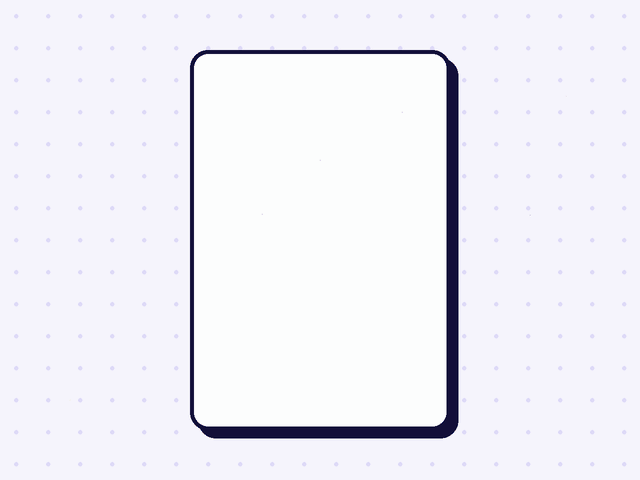
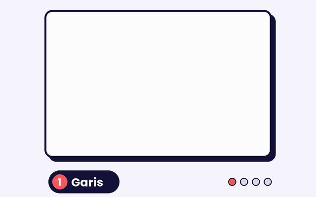
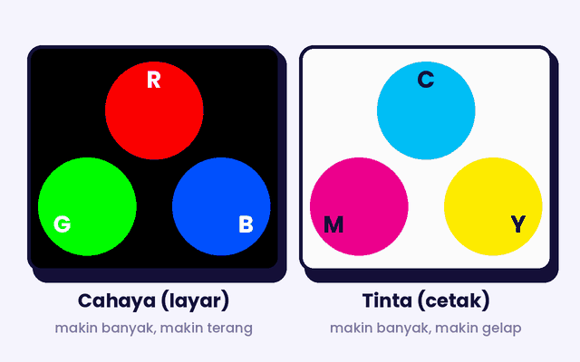
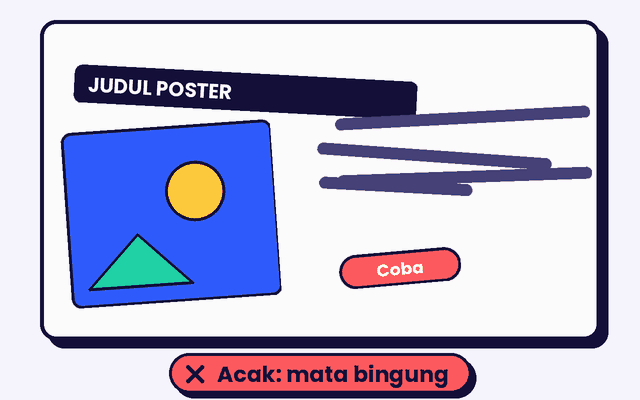
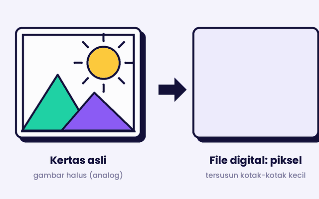
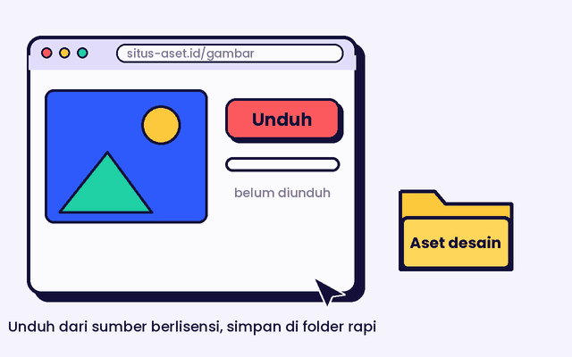

Selamat datang 👋
Dasar-Dasar Desain Grafis
Isi identitasmu dulu sebelum mulai belajar.
Huruf atau angka, 2–20 karakter (contoh: S01 atau NIM).
Belajar melihat.
Berani membuat.
Ruang belajar visual untuk memahami unsur desain, bereksperimen dengan warna, menyusun layout, dan menghasilkan karya grafis yang komunikatif.
- 5 bab pembelajaran
- 3 area praktik
- 1 proyek portofolio

- 1AmatiBedah karya visual
- 2PelajariPahami prinsip desain
- 3CobaEksperimen di studio
- 4BuatBangun portofolio

Tentang sumber belajar
Pembahasan diadaptasi dengan bahasa pembelajaran dari buku Desain Grafis SMK Kelas XI terbitan Direktorat Pembinaan SMK (2013), terutama Bab 1–5. Karena buku menggunakan konteks Kurikulum 2013 dan ditujukan untuk kelas XI, penggunaannya sebagai bahan rujukan/pengayaan perlu disesuaikan dengan ATP dan arahan guru.
Referensi visual berasal dari CSULB, Behance, Buzzvel, Presentation Team, dan sumber terkait yang ditautkan pada tiap gambar. Karya dipakai sebagai bahan pengamatan; hak cipta tetap pada pemilik masing-masing.
Belajar dengan urutan yang jelas, tetapi tetap bebas mengeksplorasi. Mulai dari materi, ikuti latihan, coba tantangan, lalu simpan karya. Kamu boleh mengulang bab kapan saja.
Pilih bab, bangun kemampuan.
Ikuti urutan materi dari dasar visual sampai pengelolaan aset digital.
01Unsur-unsur tata letak
Membuat Unsur Tata Letak secara Elektronik
Tata letak (layout) adalah cara menyusun berbagai unsur visual pada suatu bidang kerja. Unsur tersebut dapat berupa garis, bidang, ilustrasi, tipografi, warna, gelap-terang, tekstur, dan ruang. Setiap unsur memiliki karakter dan fungsi. Saat digabungkan, unsur-unsur itu membantu membangun pesan, mengatur perhatian, dan membuat karya lebih mudah dipahami.



Mengapa unsur perlu dipahami?
Sebelum menghias desain, tentukan dahulu informasi yang paling penting. Pilih unsur yang mendukung pesan. Elemen yang terlalu banyak, tidak teratur, atau saling berebut perhatian dapat membuat karya terasa penuh dan membingungkan.
1. Garis (line)
Garis dapat dipahami sebagai jejak titik yang memanjang ke suatu arah. Garis memiliki panjang, arah, ketebalan, dan karakter. Dalam desain grafis, garis dapat menjadi batas, pemisah, penghubung, penunjuk arah, kerangka ilustrasi, atau aksen yang membentuk irama.
Bentuk garis dan kesannya
- Horizontal: cenderung memberi kesan tenang dan stabil.
- Vertikal: memberi kesan tegak, kuat, atau kokoh.
- Diagonal: dapat menimbulkan kesan gerak dan dinamika.
- Lengkung: terasa lebih luwes dan mengalir.
- Zig-zag: terasa aktif, tajam, atau energik.
- Tebal-tipis / putus-putus: membedakan prioritas dan fungsi garis.
Contoh karakter garis
Coba bandingkan: garis lurus yang tegas tidak memberi kesan yang sama dengan garis lengkung atau zig-zag.
Cara menerapkan garis
Gunakan line, pen, atau freehand tool pada aplikasi grafis. Tentukan titik awal dan akhir, lalu atur ketebalan (stroke), warna, ujung garis, serta pola garis. Gunakan garis seperlunya agar tidak membuat layout terlalu ramai.
2. Bidang dan bentuk (shape)
Bidang adalah area dua dimensi yang terutama memiliki panjang dan lebar. Bentuk tiga dimensi memiliki tambahan kedalaman atau volume. Bidang dapat terbentuk dari garis tertutup, pertemuan beberapa bentuk, perbedaan warna, atau batas tekstur.
Geometris
Memiliki bentuk yang teratur, misalnya lingkaran, persegi, persegi panjang, segitiga, atau poligon. Sering dipakai untuk susunan yang terasa terukur dan terstruktur.
Organis
Lebih bebas dan menyerupai bentuk yang dijumpai di alam, seperti daun, awan, gelombang, atau siluet makhluk hidup.
Contoh bidang geometris dan organis
Pada aplikasi grafis, bentuk dapat dibuat dengan shape tool, lalu diubah melalui pengaturan node/kurva dan diberi fill atau outline.
3. Ilustrasi
Ilustrasi adalah gambar yang digunakan untuk memperjelas, menjelaskan, atau memperkuat pesan. Ilustrasi dapat dibuat secara manual, digambar langsung pada aplikasi, dibentuk dari objek vektor, atau memakai foto yang sesuai. Ilustrasi bukan sekadar hiasan: pilih gambar yang membantu pembaca memahami topik.
Bitmap / raster
Dibentuk oleh kumpulan piksel. Cocok untuk foto dan gambar dengan gradasi atau detail warna yang kompleks. Ketika diperbesar terlalu jauh, piksel dapat terlihat dan tepi gambar tampak pecah.
Vektor
Dibangun dari garis, kurva, dan bentuk matematis. Cocok untuk logo, ikon, simbol, dan ilustrasi yang perlu diperbesar atau diperkecil tanpa kehilangan ketajaman tepi.
Memilih ilustrasi yang tepat
Untuk foto produk atau suasana, gunakan gambar raster dengan resolusi memadai. Untuk logo dan ikon, pilih vektor bila tersedia. Pastikan gambar relevan, jelas, tidak terdistorsi, dan mempunyai izin penggunaan yang sesuai.
4. Tipografi
Tipografi adalah pengaturan huruf dan teks sebagai bagian dari komunikasi visual. Desainer tidak hanya memilih jenis huruf, tetapi juga menetapkan ukuran, ketebalan, jarak antarhuruf, jarak antarbaris, perataan, dan penempatannya. Tipografi yang baik membantu pembaca mengenali informasi sekaligus merasakan karakter desain.
Bagian teks yang sering muncul dalam layout
Judul utama; singkat dan paling menarik perhatian.
Menjelaskan atau memperluas judul.
Kurangi sampah sekali pakai, bawa botol minum sendiri, dan pilah sampah sesuai jenisnya.
Informasi yang lebih rinci.
Nama atau identitas yang dibentuk dari huruf.
Legibility (kejelasan huruf)
Seberapa mudah pembaca membedakan bentuk tiap karakter. Jenis huruf, ukuran, bentuk, dan kualitas tampilan memengaruhinya.
Readability (kenyamanan baca)
Seberapa nyaman sebuah susunan teks dibaca sebagai kalimat atau paragraf. Panjang baris, spasi, kontras, dan pengaturan paragraf ikut menentukan.
5. Warna
Warna dapat menarik perhatian, membedakan kelompok informasi, membentuk identitas, dan menciptakan suasana. Di dalam layout, warna perlu diterapkan dengan tujuan. Penggunaan terlalu banyak warna tanpa aturan dapat membuat perhatian pembaca terpecah. Pembahasan teori warna, model RGB/CMYK, dan karakter warna dijelaskan lebih lengkap pada Bab 2.
6. Gelap-terang
Perbedaan nilai terang dan gelap membantu memisahkan objek dari latar, memberi kesan volume, membentuk kedalaman, dan menegaskan fokus. Atur highlight dan bayangan dengan tetap menjaga detail.
7. Tekstur
Tekstur adalah kesan permukaan, misalnya halus, kasar, berpori, berbulu, atau berkilau. Dalam desain dua dimensi tekstur sering dibuat secara visual untuk menambah karakter, tetapi jangan sampai mengganggu keterbacaan.
8. Ruang
Ruang adalah area yang ditempati objek maupun area kosong di sekitarnya. Ruang positif berisi elemen; ruang negatif memberi jeda agar informasi tidak saling bertumpuk.
Alur sederhana membuat unsur secara digital
- Tentukan pesan, ukuran bidang kerja, dan media akhir (layar atau cetak).
- Buat sketsa awal untuk memutuskan posisi garis, bidang, teks, gambar, dan ruang kosong.
- Buat garis serta bentuk memakai tools yang tersedia; rapikan node dan ketebalan garis.
- Masukkan ilustrasi atau foto yang relevan. Periksa kualitas dan izin penggunaannya.
- Susun tipografi berdasarkan urutan informasi, lalu tentukan palet warna.
- Atur gelap-terang, tekstur, dan ruang agar komposisi jelas.
- Simpan file kerja yang dapat diedit dan ekspor salinan sesuai kebutuhan.
Latihan pengamatan
Ambil satu poster atau sampul. Catat contoh garis, bidang, ilustrasi, tipografi, warna, gelap-terang, tekstur, dan ruang yang terlihat. Jelaskan fungsi masing-masing unsur, bukan hanya menyebut namanya.
Acuan buku: Bab 1, halaman cetak 11–44 (unsur garis, bidang, ilustrasi, tipografi, warna, gelap-terang, tekstur, dan ruang).
02Fungsi, komponen, dan model warna
Memahami Warna untuk Kebutuhan Desain dan Cetak
Warna merupakan unsur penting dalam desain grafis karena dapat membantu sebuah karya dikenali, memberi tanda, membangun suasana, dan menarik perhatian. Pemilihan warna tidak cukup hanya berdasarkan warna yang disukai. Desainer perlu memahami bagaimana warna terlihat, bagaimana warna dicampur, serta bagaimana hasilnya berubah saat ditampilkan di layar atau dicetak.


1. Bagaimana warna dapat terlihat?
Penglihatan warna melibatkan tiga unsur yang saling berkaitan: sumber cahaya, benda yang berinteraksi dengan cahaya, dan pengamat. Cahaya mengenai benda; sebagian panjang gelombang diserap dan sebagian dipantulkan atau diteruskan. Mata menerima cahaya yang sampai kepadanya, lalu otak menafsirkannya sebagai warna. Karena itu, pencahayaan dan warna di sekeliling objek dapat memengaruhi kesan warna yang kita lihat.
Sumber cahaya
Benda / objek
Pengamat (mata)
Contoh: benda putih dapat terlihat berbeda di bawah lampu kekuningan dibandingkan di bawah cahaya putih. Untuk pekerjaan cetak, kondisi cahaya saat menilai hasil cetak juga perlu diperhatikan.
2. Jenis dan hubungan warna
Lingkaran warna membantu desainer memahami hubungan ant warna. Dalam pengenalan warna tradisional, warna dibagi menjadi primer, sekunder, dan tersier. Hubungan di dalam roda warna juga dapat dipakai untuk membuat kombinasi yang serasi atau kontras.
Primer: warna dasar pada sistem roda warna yang diperkenalkan, tidak diperoleh dari campuran warna lain pada sistem tersebut.
Sekunder: hasil campuran dua warna primer yang berdekatan.
Tersier: hasil campuran warna primer dan sekunder di sekitarnya.
Analogus: warna yang posisinya berdampingan pada roda warna.
Komplementer: warna yang posisinya saling berlawanan dan biasanya membentuk kontras kuat.
Netral: warna dengan karakter relatif tidak mencolok, misalnya variasi abu-abu, putih, dan hitam.
Hangat dan dingin: kelompok warna yang memberi kesan berbeda; merah-oranye-kuning sering dianggap hangat, sedangkan biru-hijau-ungu sering dianggap dingin.
Kombinasi analogus
Warna berdekatan memberi alur yang relatif harmonis. Cocok untuk suasana yang menyatu.
Kombinasi komplementer
Pasangan yang berseberangan dapat membuat elemen lebih menonjol. Atur proporsi supaya kontras tetap nyaman.
3. Warna aditif dan warna subtraktif
Ada perbedaan antara pencampuran cahaya dan pencampuran pigmen atau tinta. Perbedaan ini penting ketika menyiapkan desain untuk layar dan untuk dicetak.
Aditif — RGB
Red, Green, Blue adalah tiga kanal cahaya yang digunakan pada monitor, televisi, kamera, dan layar digital. Ketika cahaya merah, hijau, dan biru ditambahkan dengan intensitas tinggi secara bersamaan, hasilnya mendekati putih. Model ini cocok untuk karya yang ditampilkan di layar.
Subtraktif — CMYK
Cyan, Magenta, Yellow, dan Key/Black digunakan pada tinta cetak. Pigmen menyerap sebagian cahaya dan memantulkan sisanya. Campuran CMY secara teori dapat menghasilkan gelap, tetapi tinta hitam ditambahkan agar teks dan area gelap lebih tegas serta proses cetak lebih terkontrol.
| Aspek | RGB | CMYK |
|---|---|---|
| Dasar pembentukan | Cahaya | Pigmen / tinta di atas media cetak |
| Kanal | Red, Green, Blue | Cyan, Magenta, Yellow, Key/Black |
| Penggunaan umum | Layar digital | Proses cetak |
| Perhatian | Warna dipancarkan layar | Hasil dipengaruhi tinta, kertas, dan proses cetak |
Ingat sebelum mencetak
Warna di layar dan di kertas tidak selalu sama. Rentang warna yang dapat dihasilkan sebuah perangkat disebut gamut. Monitor, printer, tinta, dan kertas memiliki kemampuan warna yang berbeda. Karena itu, periksa pengaturan warna dan buat proof/tes cetak untuk pekerjaan penting.
4. Model warna: RGB, CMYK, HSL, dan Lab
RGB
Menyatakan warna dengan nilai tiga kanal cahaya merah, hijau, dan biru. Perangkat layar menggunakan kombinasi nilai tersebut untuk menampilkan warna.
CMYK
Menyatakan warna berdasarkan persentase cyan, magenta, yellow, dan black. Digunakan saat menyiapkan berkas untuk banyak proses cetak.
HSL
Hue berarti jenis warna; Saturation menunjukkan kejenuhan; Lightness menunjukkan tingkat terang-gelap. Model ini memudahkan penyesuaian warna secara lebih intuitif.
Lab
Model tiga komponen: L untuk lightness, a pada sumbu hijau–merah, dan b pada sumbu biru–kuning. Model Lab berguna dalam pengelolaan dan perbandingan warna.
Model warna adalah cara mendeskripsikan warna, bukan empat jenis tinta yang harus digunakan bersamaan. Pilih model berdasarkan kebutuhan output dan fitur aplikasi yang dipakai.
5. Warna proses dan warna khusus (spot color)
Warna proses
Warna dibentuk dari kombinasi beberapa tinta proses, umumnya CMYK. Cara ini cocok untuk banyak gambar berwarna dan foto yang memiliki variasi warna luas.
Spot color
Warna khusus yang dicetak menggunakan tinta yang telah ditentukan sebagai warna tersendiri. Dipilih ketika warna merek atau warna tertentu perlu dijaga konsistensinya sesuai spesifikasi produksi.
6. Fungsi dan karakter warna
Warna dapat menjalankan beberapa peran dalam komunikasi visual. Peran ini bergantung pada konteks, kombinasi, budaya, target pembaca, dan media yang dipakai.
Identitas
Warna membantu membedakan merek, organisasi, kelompok, atau jenis informasi.
Isyarat / penanda
Warna dapat memberi tanda status atau kondisi, misalnya merah untuk peringatan dan hijau untuk tanda aman pada sistem tertentu.
Psikologis
Warna dapat membangun suasana dan memengaruhi kesan pembaca. Misalnya biru sering diasosiasikan dengan ketenangan, tetapi asosiasi ini tidak mutlak.
Alamiah dan estetis
Warna dapat meniru karakter objek di alam dan sekaligus membentuk daya tarik serta kualitas visual karya.
Buku memberi contoh asosiasi warna seperti hitam, putih, abu-abu, merah, kuning, biru, hijau, ungu, oranye, dan cokelat. Gunakan contoh itu sebagai bahan pertimbangan, bukan aturan yang berlaku untuk semua orang atau semua budaya.
Latihan penerapan
Pilih satu karya yang akan ditampilkan di layar dan satu karya yang akan dicetak. Tentukan model warna yang sesuai untuk masing-masing. Buat dua palet berbeda, lalu jelaskan alasan pemilihan warna, hubungan antarwarna, dan kemungkinan perubahan saat dicetak.
Acuan buku: Bab 2, halaman cetak 45–70 (pengertian warna, jenis kombinasi, warna aditif/subtraktif, model warna, gamut, spot/process color, serta fungsi dan karakter warna).
03Prinsip tata letak
Menyusun Layout dengan Proporsi, Keseimbangan, Irama, Kontras, Kesatuan, dan Harmoni
Unsur desain adalah bahan pembentuk karya, sedangkan prinsip tata letak merupakan pedoman untuk mengatur hubungan antarunsur tersebut. Prinsip membantu desainer membangun komposisi yang mudah dibaca, memiliki arah perhatian, dan terasa menyatu. Prinsip tidak harus dipakai secara kaku; pilih penerapan yang sesuai dengan tujuan karya.



1. Proporsi (proportion)
Proporsi adalah hubungan ukuran antara satu unsur dengan unsur lain, antara unsur dan bidang tempatnya berada, maupun antara bagian-bagian dalam satu objek. Proporsi memengaruhi prioritas. Judul yang sangat kecil akan kalah dari foto yang sangat besar; sebaliknya, judul yang terlalu dominan bisa menenggelamkan informasi lainnya.
Ilustrasi pembagian bidang
Bidang besar dapat menjadi tempat visual utama, sedangkan bidang yang lebih kecil dapat memuat keterangan atau informasi pendukung.
Golden ratio / rasio emas
Buku memperkenalkan rasio emas sekitar 1,618 sebagai salah satu pendekatan untuk membagi bidang secara proporsional. Rasio ini dapat menjadi panduan eksplorasi, bukan kewajiban. Layout yang baik tetap perlu dinilai dari kejelasan pesan dan kesesuaiannya dengan media.
Cara sederhana mengatur proporsi: tentukan unsur utama, tetapkan ukuran bidang, berikan porsi terbesar pada bagian yang paling penting, lalu atur elemen pendukung supaya tidak bersaing dengan fokus utama.
2. Keseimbangan (balance)
Keseimbangan adalah pembagian bobot visual agar komposisi tidak terasa berat sebelah. Bobot visual tidak hanya ditentukan ukuran, tetapi juga warna, kontras, kepadatan, bentuk, dan posisi suatu elemen.
Simetris
Unsur di kiri dan kanan atau atas dan bawah disusun dengan bobot yang relatif setara. Kesan yang muncul sering lebih formal, teratur, dan stabil.
Asimetris
Unsur kiri dan kanan tidak sama persis, tetapi bobot visualnya tetap terasa seimbang. Kesan dapat lebih dinamis dan tidak monoton.
Saat menguji keseimbangan, lihat keseluruhan bidang, bukan hanya satu objek. Coba kecilkan atau perbesar elemen, ubah posisinya, dan amati apakah salah satu sisi terasa terlalu berat.
3. Irama (rhythm)
Irama terbentuk melalui pengulangan unsur visual sehingga mata dapat mengikuti alur komposisi. Pengulangan yang konsisten memberi keteraturan; pengulangan dengan variasi ukuran, bentuk, warna, atau jarak dapat memberi kesan lebih dinamis.
Repetisi teratur
Jarak dan ukuran serupa membangun pola yang stabil.
Variasi
Perubahan ukuran atau jarak dapat membuat pola terasa lebih aktif.
Pada majalah, brosur beberapa halaman, atau materi presentasi, pengulangan posisi judul, nomor halaman, margin, dan gaya gambar membantu membentuk identitas yang konsisten.
4. Kontras (contrast)
Kontras adalah perbedaan yang sengaja dibuat agar elemen mudah dibedakan dan bagian penting lebih menonjol. Kontras dapat dibentuk melalui ukuran, tebal-tipis huruf, warna, bentuk, tekstur, posisi, atau ruang.
Contoh kontras dalam poster
ENERGI!
Matikan lampu saat ruangan kosong.
Judul berukuran besar dan tebal menjadi fokus. Keterangan ditampilkan lebih kecil. Perbedaan ini membantu pembaca mengenali urutan informasi.
5. Kesatuan (unity)
Kesatuan terjadi saat semua unsur terlihat sebagai bagian dari satu rancangan, bukan potongan yang berdiri sendiri. Kesatuan dapat dibangun dengan mengulang palet warna, jenis huruf, gaya ilustrasi, bentuk, aturan jarak, dan perataan. Kedekatan (proximity) juga membantu: informasi yang saling berhubungan ditempatkan berdekatan.
Warna, sudut kotak, gaya huruf, dan jarak yang diulang membuat bagian-bagian tampak memiliki hubungan.
6. Keselarasan (harmony)
Harmoni adalah keserasian antarunsur, baik dari segi bentuk maupun warna. Elemen tidak harus sama, tetapi harus saling mendukung. Misalnya, desain bertema alam dapat menggunakan bentuk yang lembut, warna yang dekat dengan alam, dan tipografi yang cocok dengan suasananya.
Harmoni bentuk
Gunakan bentuk dan gaya ilustrasi yang memiliki karakter sejalan. Bentuk geometris tegas dapat dipadukan secara terencana dengan bentuk organik, bukan secara acak.
Harmoni warna
Pilih kombinasi warna yang saling mendukung. Warna analogus dapat terasa lembut; warna komplementer dapat memberi kontras yang lebih kuat.
Grid system untuk layout halaman
Grid adalah kerangka bantu yang membagi bidang kerja menjadi kolom, baris, margin, dan ruang antar-kolom (gutter). Grid membantu menjaga perataan, keteraturan, dan konsistensi. Grid bukan batas mutlak; desainer dapat membuat variasi selama keterbacaan dan hubungan antarbagian tetap jelas.
Contoh skema: area luar adalah halaman, garis putus-putus menandai area aman, dan tiga kolom menjadi acuan penempatan isi.
Persiapan layout untuk barang cetakan
- Tentukan ukuran halaman, orientasi, serta jumlah halaman.
- Tetapkan margin, kolom, dan grid agar teks serta gambar memiliki acuan.
- Tentukan hierarki informasi dan posisi elemen berulang melalui master page bila aplikasinya mendukung.
- Tempatkan teks dan gambar, kemudian periksa perataan, proporsi, kontras, kesatuan, dan harmoni.
- Atur bleed sesuai spesifikasi percetakan. Buku memperkenalkan tambahan area potong sekitar 3 mm di tiap sisi sebagai acuan umum; ikuti spesifikasi vendor untuk pekerjaan sebenarnya.
- Periksa ejaan, resolusi gambar, font, warna, margin aman, dan halaman, lalu ekspor PDF sesuai kebutuhan output.
Catatan istilah
Margin adalah jarak aman dari tepi halaman; gutter adalah jarak di antara kolom; bleed adalah area gambar yang sengaja dilebihkan melewati garis potong agar tidak muncul garis putih setelah pemotongan.
Latihan evaluasi layout
Bandingkan dua poster. Catat bagian yang menjadi fokus, apakah komposisinya simetris atau asimetris, pola pengulangannya, bentuk kontrasnya, serta cara warna, huruf, dan ilustrasi membangun kesatuan dan harmoni.
Acuan buku: Bab 3, halaman cetak 71–98 (proporsi, golden section, keseimbangan, irama, kontras, kesatuan, harmoni, grid system, margin, kolom, master page, dan bleed).
04Pemindaian gambar / ilustrasi / teks
Mengenal Scanner dan Proses Digitalisasi Gambar
Scanner adalah perangkat untuk mengambil informasi visual dari objek fisik, seperti foto, gambar, atau dokumen, lalu mengubahnya menjadi data digital. Di bidang desain grafis, scanner berguna ketika bahan awal berupa karya tangan, foto cetak, sketsa, atau dokumen yang perlu diolah kembali di komputer.



Tujuan pemindaian
Menghasilkan salinan digital yang dapat disimpan, diperbaiki (retouch), digabungkan ke layout, dibagikan, atau disiapkan untuk proses produksi. Scanner bukan hanya untuk arsip; hasilnya juga dapat menjadi bahan ilustrasi atau elemen desain.
1. Jenis-jenis scanner
Buku menjelaskan beberapa jenis scanner berdasarkan bentuk dan cara pemakaiannya. Setiap jenis memiliki keunggulan dan batas penggunaan. Pilih perangkat berdasarkan ukuran objek, jumlah dokumen, kualitas yang dibutuhkan, serta anggaran.
Flatbed
Dokumen atau foto diletakkan di atas kaca pemindai dan tutup diturunkan. Cocok untuk penggunaan umum, foto, ilustrasi, dan dokumen satuan.
Handheld
Perangkat digerakkan di atas objek. Praktis untuk kondisi tertentu, tetapi hasil sangat dipengaruhi kestabilan gerakan pengguna.
Automatic Document Feeder (ADF)
Memasukkan banyak lembar secara otomatis. Cocok untuk dokumen berjumlah banyak, dengan syarat kertas sesuai ukuran dan kondisi mesin.
Drum scanner
Jenis pemindai profesional yang dikenal karena kemampuan detail dan resolusi tinggi. Digunakan untuk kebutuhan khusus dengan biaya dan perawatan lebih besar.
Slide scanner
Dirancang untuk memindai film positif/slide transparan berukuran kecil sehingga detail foto dapat dipertahankan.
Transparency scanner
Memindai bahan transparan atau film negatif/positif dengan sistem pencahayaan dan dudukan yang sesuai.
Copydot scanner
Digunakan dalam industri percetakan untuk mengubah film separasi menjadi data digital. Ini merupakan teknologi khusus pada alur kerja praproduksi cetak.
Pemindai barcode
Membaca pola kode pada label untuk mengidentifikasi barang atau data. Fungsinya berbeda dari scanner flatbed yang memindai gambar atau dokumen.
2. Komponen dan cara kerja scanner
Pada scanner flatbed, beberapa bagian penting bekerja bersama. Kaca menjadi tempat objek; sumber cahaya menerangi objek; sistem optik mengarahkan pantulan cahaya ke sensor; sensor menangkap informasi; kemudian rangkaian elektronik dan perangkat lunak mengubahnya menjadi berkas digital. Model scanner pada buku membahas sensor CCD (Charge-Coupled Device) dan motor penggerak kepala pemindai.
Alur sederhana proses pemindaian
Kepala pemindai bergerak melintasi objek. Cahaya yang dipantulkan ditangkap sensor, diubah menjadi sinyal, lalu diproses menjadi piksel pada file gambar.
Bagian perangkat keras
- Kaca pemindai untuk meletakkan objek.
- Sumber cahaya untuk menerangi objek.
- Sistem cermin/lensa untuk mengarahkan cahaya.
- Sensor gambar, misalnya CCD pada model tertentu.
- Motor dan mekanisme gerak kepala scanner.
Perangkat lunak
- Driver agar komputer dapat berkomunikasi dengan scanner.
- Antarmuka untuk memilih mode dan kualitas.
- Pratinjau, pemotongan, koreksi warna, dan penyimpanan.
- OCR jika dokumen teks ingin diubah menjadi teks yang dapat dicari atau diedit.
3. Pengaturan yang memengaruhi hasil scan
Mode warna
Color/RGB untuk foto atau ilustrasi berwarna; Grayscale untuk gambar bernuansa abu-abu; Black & White untuk teks atau garis sederhana yang membutuhkan dua warna utama.
Resolusi
Menentukan banyaknya detail yang direkam. Resolusi tinggi menghasilkan file lebih besar. Pilih berdasarkan ukuran akhir dan kebutuhan: arsip ringan, dokumen baca, atau reproduksi/cetak.
Area dan ukuran
Pilih area yang ingin dipindai dan pastikan tidak ada bagian penting yang terpotong. Periksa ukuran hasil dan skala pembesaran.
Warna dan koreksi
Atur exposure/brightness, contrast, saturation, serta white point/black point jika tersedia. Gunakan seperlunya supaya hasil tetap mendekati objek asli.
Memahami resolusi
Semakin banyak piksel yang direkam untuk ukuran yang sama, semakin banyak detail yang dapat tersedia, tetapi ukuran file juga meningkat. Untuk materi cetak, 300 ppi pada ukuran akhir sering dijadikan titik awal umum untuk gambar foto; kebutuhan sebenarnya mengikuti jenis gambar, ukuran cetak, jarak pandang, dan spesifikasi percetakan.
4. Langkah umum memindai gambar
- Periksa kabel, daya, koneksi, dan driver scanner. Pasang perangkat lunak dari sumber resmi produsen bila dibutuhkan.
- Bersihkan kaca pemindai dengan bahan yang aman; pastikan tidak ada debu, sidik jari, staples, atau benda yang dapat menggores kaca.
- Letakkan foto atau dokumen sesuai tanda posisi pada scanner. Untuk buku tebal, jangan menekan tutup terlalu keras hingga merusak punggung buku.
- Buka aplikasi pemindaian. Pilih sumber (scanner), ukuran, mode warna, resolusi, dan lokasi penyimpanan.
- Lakukan preview/pratinjau untuk memeriksa orientasi serta area yang akan diambil. Atur crop jika diperlukan.
- Jalankan scan. Periksa hasilnya; lakukan koreksi seperlunya tanpa menghilangkan detail penting.
- Simpan file dengan nama yang jelas dan format sesuai keperluan.
5. Memilih format file hasil scan
| Format | Karakter umum | Contoh penggunaan |
|---|---|---|
| JPEG / JPG | Kompresi lossy; ukuran cenderung lebih kecil | Foto untuk dibagikan atau digunakan pada web |
| TIFF | Dapat menyimpan detail dengan kompresi lossless atau tanpa kompresi | Arsip dan proses pengolahan gambar berkualitas |
| PNG | Kompresi lossless; mendukung transparansi | Gambar digital, teks/diagram, dan grafis web |
| BMP | Format bitmap sederhana; file dapat berukuran besar | Kebutuhan tertentu pada aplikasi Windows |
| Wadah dokumen; dapat berisi gambar dan teks hasil OCR | Dokumen multi-halaman untuk dibaca atau dibagikan |
Untuk teks yang ingin dicari atau diedit, OCR (Optical Character Recognition) dapat mengenali bentuk huruf pada hasil scan dan mengubahnya menjadi teks digital. Hasil OCR tetap perlu diperiksa karena kesalahan pengenalan dapat terjadi.
Latihan praktik scanner
Pindai satu sketsa atau foto yang kamu miliki dengan izin pemiliknya. Catat jenis scanner, mode warna, resolusi, format file, serta perubahan yang terlihat setelah disimpan. Bandingkan hasilnya saat ditampilkan di layar.
Acuan buku: Bab 4, halaman cetak 100–125 (jenis scanner, tujuan, fungsi, komponen, cara kerja, kualitas/model, teknik penggunaan, dan penyimpanan hasil scan).
05Data digital melalui internet
Mengunduh, Mengunggah, dan Mengelola Aset Desain
Internet menghubungkan perangkat dan jaringan di berbagai tempat sehingga pengguna dapat bertukar informasi. Dalam pekerjaan desain grafis, internet membantu mencari referensi, mengunduh bahan visual yang boleh digunakan, mengirim file ke guru atau klien, bekerja bersama, serta menyimpan cadangan karya.



1. Pengertian singkat dan perkembangan internet
Internet merupakan jaringan dari jaringan (interconnected networks) yang memungkinkan komputer dan perangkat lain bertukar data menggunakan seperangkat aturan komunikasi. Buku menjelaskan perkembangan awal dari riset jaringan ARPA/ARPANET, penggunaan packet switching, berkembangnya protokol TCP/IP, dan hadirnya World Wide Web (WWW) yang membuat halaman web lebih mudah diakses.
Garis waktu ini menyederhanakan perkembangan yang dibahas buku; sejarah internet berlangsung melalui banyak riset dan kontribusi.
2. Manfaat internet untuk belajar dan desain
Pendidikan
Mengakses materi pembelajaran, tutorial, jurnal, katalog, dan sumber belajar; mengirim tugas; serta berkomunikasi dengan guru atau teman.
Pekerjaan
Mencari referensi, berbagi file desain, mengirim proof, menerima masukan, dan berkolaborasi dengan anggota tim atau percetakan.
Komunikasi
Mengirim pesan, email, dan dokumen; melakukan diskusi atau konsultasi jarak jauh.
Layanan digital
Menggunakan penyimpanan awan, perpustakaan digital, platform desain, serta layanan publik dan komersial.
3. Browser dan bagian-bagiannya
Browser atau peramban adalah aplikasi yang digunakan untuk membuka halaman web dan berinteraksi dengan layanan internet. Contohnya antara lain Chrome, Firefox, Edge, Safari, dan peramban lain. Tampilan setiap browser dapat berbeda, tetapi fungsi utamanya serupa.
Area untuk membaca informasi, melihat gambar, atau membuka layanan daring.
Tab dan bilah judul
Menampilkan halaman yang dibuka dan membantu berpindah di antara beberapa tab.
Address bar / bilah alamat
Tempat mengetik alamat situs (URL) atau kata pencarian. Periksa alamat sebelum memasukkan data.
Tombol navigasi
Back, forward, dan refresh membantu berpindah atau memuat ulang halaman.
Area halaman dan scrollbar
Area halaman menampilkan isi situs; scrollbar membantu bergerak ke bagian atas atau bawah.
4. Memahami istilah dasar internet
| Istilah | Makna dalam penggunaan |
|---|---|
| URL | Alamat lengkap sumber atau halaman di internet. |
| Browser | Aplikasi untuk membuka dan menampilkan halaman web. |
| Download | Mengambil file dari layanan internet ke perangkat lokal. |
| Upload | Mengirim file dari perangkat lokal ke layanan internet. |
| Login / logout | Masuk ke akun dan keluar dari sesi akun. |
| Bandwidth | Kapasitas transfer data jaringan dalam suatu waktu. |
| Domain / TLD | Nama alamat situs dan akhiran domain, misalnya .com atau .org. |
| Online / offline | Terhubung atau tidak sedang terhubung ke jaringan. |
Akhiran domain dapat memberi petunjuk jenis organisasi atau wilayah, misalnya .com, .org, .edu, .gov, .id, .ac.id, dan .sch.id. Namun, akhiran domain saja bukan jaminan bahwa suatu situs tepercaya; periksa pemilik situs, alamat, isi, dan sumber informasinya.
5. Download aset gambar untuk kebutuhan desain
Download adalah proses mengunduh file dari internet ke komputer atau perangkat. Untuk pekerjaan desain, aset yang dicari dapat berupa foto, ilustrasi, ikon, tekstur, font, template, atau dokumen referensi. Jangan hanya memilih gambar yang menarik; pastikan kualitas, relevansi, dan hak penggunaannya sesuai.
- Tentukan jenis aset dan kata kunci yang spesifik, misalnya "daun tropis latar putih" atau "ikon daur ulang vektor".
- Gunakan sumber yang jelas, seperti situs resmi pemilik karya, repositori aset dengan lisensi, atau koleksi yang secara eksplisit memperbolehkan penggunaan.
- Baca lisensi: apakah boleh dipakai untuk tugas, dipublikasikan, diedit, atau dipakai untuk tujuan komersial; periksa apakah atribusi diwajibkan.
- Buka halaman sumber asli dan pilih file dengan ukuran serta kualitas yang sesuai. Jangan mengambil gambar kecil dari thumbnail bila tersedia file asli.
- Unduh melalui tombol resmi situs atau fungsi browser yang disediakan. Hindari tombol iklan atau file yang tidak jelas.
- Simpan pada folder proyek, ubah nama file agar mudah dikenali, dan catat URL sumber serta informasi lisensinya.
Etika dan hak cipta
Tidak semua gambar yang muncul di hasil pencarian bebas digunakan. Jangan menganggap gambar dapat dipakai hanya karena bisa diunduh. Hormati pemilik karya, gunakan aset berlisensi atau karya sendiri, dan simpan bukti lisensi/kredit sesuai ketentuannya.
6. Upload dan penyimpanan data digital
Upload adalah kebalikan dari download: file dikirim dari perangkat ke layanan atau server di internet. Desainer dapat mengunggah hasil kerja untuk dikumpulkan, ditinjau, dibagikan kepada tim, atau disimpan sebagai cadangan. Perhatikan nama file, ukuran, format, dan hak akses sebelum mengunggah.
Download
File bergerak dari layanan internet ke perangkatmu.
Upload
File bergerak dari perangkatmu ke layanan internet.
Contoh struktur folder proyek
📁 Poster_Kampanye
📁 01_Referensi
📁 02_Aset_Asli
📁 03_File_Kerja
📁 04_Ekspor
📁 05_Lisensi_dan_Kredit
📄 catatan_proyek.txt
Gunakan penamaan yang konsisten, misalnya poster_hemat-energi_v01, poster_hemat-energi_v02, dan poster_hemat-energi_final. Simpan file sumber yang dapat diedit dan file final secara terpisah. Cadangkan pekerjaan pada media lain atau penyimpanan awan.
7. Keamanan saat mengambil dan menyimpan file
- Unduh dari situs atau layanan yang dikenal dan periksa kembali alamatnya.
- Jangan membuka file program atau lampiran yang tidak diharapkan; periksa ekstensi dan sumbernya.
- Jangan memasukkan kata sandi atau data pribadi pada halaman yang tidak jelas.
- Gunakan kata sandi yang kuat dan jangan membagikannya kepada orang lain.
- Atur akses cloud sesuai kebutuhan: pribadi, orang tertentu, atau publik hanya jika memang diperlukan.
- Pastikan salinan cadangan dapat dibuka dan tidak hanya mengandalkan satu perangkat.
Pembaruan terhadap contoh buku
Buku tahun 2013 menampilkan contoh situs dan aplikasi download yang populer pada masanya. Layanan dan tampilannya dapat berubah atau sudah tidak digunakan. Untuk praktik sekarang, gunakan fitur download resmi dari situs sumber atau browser; jangan memakai layanan pihak ketiga untuk melewati pembatasan atau ketentuan hak cipta platform.
Latihan pengelolaan aset
Cari satu gambar yang lisensinya mengizinkan penggunaan untuk tugas. Catat nama pembuat, sumber, jenis lisensi, format, dan resolusinya. Unduh, simpan dalam folder proyek, lalu buat satu catatan singkat tentang alasan gambar tersebut sesuai dengan tema desainmu.
Acuan buku: Bab 5, halaman cetak 127–149 (internet, manfaat, browser, download, upload, penyimpanan digital, dan nama ranah/domain). Contoh layanan tahun 2013 telah diperbarui secara konseptual agar aman dan relevan untuk praktik saat ini.
Gambar pada bagian ini digunakan sebagai referensi pembelajaran dan tetap menjadi hak pemilik/sumber aslinya. Untuk karya siswa, periksa izin dan lisensi sebelum menggunakan kembali aset.
Pengayaan dan Ringkasan Belajar
Gunakan bagian ini untuk mengulang gagasan utama dan memeriksa pemahamanmu.
Peta urutan pembelajaran
Kenali unsur tata letak → pahami warna dan model RGB/CMYK → terapkan prinsip proporsi, keseimbangan, irama, kontras, kesatuan, dan harmoni → digitalisasi bahan dengan scanner → cari, unduh, unggah, dan kelola aset digital secara aman.
Unsur tata letak
Garis, bidang, gambar, huruf, warna, tekstur, ruang.
Warna
Roda warna, RGB, CMYK, HSL, dan Lab.
Prinsip layout
Proporsi, balance, rhythm, contrast, unity, harmony.
Scanner & internet
Digitalisasi dan pengelolaan file.
Seret istilah ke penjelasan yang sesuai. Di layar sentuh, ketuk istilah lalu ketuk kotak jawabannya.
Belajar dengan Membuat Karya
Ikuti panduan, pecahkan tantangan desain, lalu kumpulkan hasil karyamu. Setiap aktivitas terhubung dengan lima bab pembahasan.
01 / Guided Practice — Rancang poster kampanye
Mulai dari contoh sederhana. Ubah teks, warna, dan komposisi untuk melihat bagaimana keputusan desain memengaruhi hasil akhir.
Pilih tema untuk mengisi contoh teks otomatis, lalu edit sesuai ide sendiri.
Kontras warna diperiksa otomatis.
Setiap layout memiliki hirarki dan karakter visual yang berbeda.
Batasi jumlah warna dan jenis huruf. Pastikan judul paling mudah terlihat, lalu susun informasi pendukung dengan urutan yang jelas.
Ubah pengaturan untuk melihat pratinjau. Ekspor saat desain siap.
Asset Hunter: Kelola Aset Desain
Temukan satu gambar yang sesuai dengan tema poster. Pastikan sumber dan izinnya jelas, lalu catat agar aset dapat ditelusuri kembali.
Daftar aset masih kosong.
- Belum ada aset yang dicatat.
Satu misi.
Satu karya.
Masuk ke studio sebagai desainer. Baca brief, pahami kebutuhan klien, lalu selesaikan tantangan visual satu langkah demi satu langkah.
IT
VISIBLE.DESIGN WITH PURPOSE
Mission board
Mulai dari misi yang tersedia. Misi berikutnya akan dibuka bertahap setelah aktivitasnya siap.
Layout Architect
CLIENT BRIEF — Kampanye kreatif sekolah
Klien membutuhkan poster kampanye yang pesannya langsung terbaca. Susun judul, visual utama, dan ajakan, lalu uji kontras serta hierarki visualnya.
THE MESSAGE
MATTER.
Fix This Design
CLIENT BRIEF — Festival Literasi Sekolah
Sebuah poster sudah dibuat, tetapi pesan utamanya sulit dibaca. Temukan tiga masalah visual, pilih perbaikannya, dan lihat perubahan desain secara langsung.
Belum diselesaikan · 3 keputusan desain
LITERASIBACA BUKU DISINI DATANG JAM 08.00 BAWA TEMANMUINFO LEBIH LANJUT
Selesaikan Layout Architect untuk membangun komposisi, lalu lanjutkan ke Fix This Design untuk menganalisis dan memperbaiki karya. Misi lain akan ditambahkan setelah dua misi ini matang.
Saat ini tersedia dua misi inti: Layout Architect dan Fix This Design. Selesaikan keduanya untuk membangun kemampuan menyusun dan mengevaluasi desain.
Susun poster yang komunikatif.
Selesaikan tiga tahap singkat. Kamu bisa menyeret elemen ke kotak atau memilih elemen lalu mengetuk kotak tujuan—pilihan kedua lebih nyaman di HP.
MISSION 01 / Layout Architect — Susun struktur poster
Tempatkan judul, visual utama, dan ajakan pada posisi yang tepat. Setelah itu, selesaikan tantangan kontras dan hierarki visual.
Studio Mini: Susun Struktur Poster
Seret tiga bagian poster ke area yang tepat. Praktik ini menguji penerapan unsur tata letak, keseimbangan, kontras, dan penekanan informasi.
Palet Elemen Poster
Level 2: terapkan prinsip kontras dengan memilih pasangan teks dan latar yang mudah dibaca.
Level 3: terapkan hierarki visual dengan memilih bagian yang perlu paling menonjol pada poster ajakan.
Fix This Design.
Klien sudah punya poster, tetapi informasi penting belum terbaca dengan baik. Jadilah art director: temukan masalah, pilih solusi, dan perbaiki desainnya.
IT!
Bandingkan desain
EVENT
LITERASI
Perhatikan kontras, urutan informasi, dan jarak antar elemen.
LITERASI.
Buka ide baru lewat cerita dan pengetahuan.
Hasil akan berubah setiap kali kamu memilih perbaikan.
Catatan art director Desain yang baik bukan sekadar ramai. Setiap unsur harus membantu pembaca memahami pesan.
Perbaiki 3 masalah
Pilih satu solusi terbaik untuk setiap masalah. Feedback akan muncul setelah kamu memilih.
Pasangan warna mana yang paling membantu keterbacaan?
Pilih pasangan warna untuk memperbaiki kontras.
Bagaimana urutan informasi sebaiknya ditampilkan?
Pilih hierarki yang membantu pembaca memahami pesan.
Perbaikan tata letak mana yang paling tepat?
Pilih komposisi yang memberi ruang dan keteraturan.
Design rescued!
Kamu berhasil memperbaiki kontras, hierarki visual, dan tata letak poster.
+100 CREATIVE POINTS03 / Project & Portfolio — Bangun portofolio
Gunakan hasil latihan sebagai bekal. Buat karya final di aplikasi desain pilihanmu, kemudian periksa menggunakan kriteria berikut.
Poster A4: Kurangi Plastik Sekali Pakai
Target audiens: warga sekolah. Tujuan: mengajak siswa membawa botol minum dan tas pakai ulang serta mengurangi plastik sekali pakai.
- Ukuran A4, orientasi potret.
- Headline singkat dan mudah dibaca.
- Gunakan ilustrasi/foto yang relevan dan boleh digunakan.
- Terapkan kontras, keseimbangan, kesatuan, dan hierarki.
- Ekspor hasil akhir menjadi PNG atau PDF.
Pilihan tema proyek lain: literasi digital, budaya lokal, hemat energi, hidup sehat, atau kampanye anti-perundungan. Guru dapat memilih tema sesuai konteks kelas.
Periksa sebelum dikumpulkan
0 dari 5 pemeriksaan selesai.
Portofolio karya siswa
Simpan hasil karya di perangkat ini, lalu kirim ke ruang pengumpulan guru setelah endpoint portofolio kelas diaktifkan.
Portofolio lokal siap digunakan. Pengiriman guru perlu endpoint kelas.
Belum ada file yang dipilih.
Teks soal akan tampil di sini.
Kamu belum mengerjakan kuis.
Angket SUS tetap bisa diisi dan dikirim. Skor kuis akan tercatat kosong sampai kamu mengerjakannya.
Hasil Belajar
Benar 0 dari 10 soal
Angket Kemudahan Penggunaan (SUS)
Pilih 1 (sangat tidak setuju) sampai 5 (sangat setuju).
1. Saya merasa bahwa saya akan sering menggunakan media pembelajaran ini.
2. Saya merasa media pembelajaran ini terlalu rumit.
3. Saya merasa media pembelajaran ini mudah digunakan.
4. Saya membutuhkan bantuan teknis untuk menggunakan media pembelajaran ini.
5. Fitur yang tersedia dalam media pembelajaran ini terintegrasi dengan baik.
6. Saya merasa ada terlalu banyak inkonsistensi dalam media pembelajaran ini.
7. Sebagian besar orang akan belajar menggunakan media pembelajaran ini dengan sangat cepat.
8. Saya merasa media pembelajaran ini terlalu membingungkan.
9. Saya merasa percaya diri saat menggunakan media pembelajaran ini.
10. Saya perlu mempelajari banyak hal sebelum bisa menggunakan media pembelajaran ini.
Terjawab 0 dari 10 pernyataan